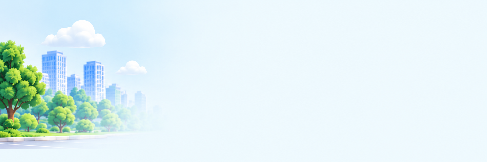
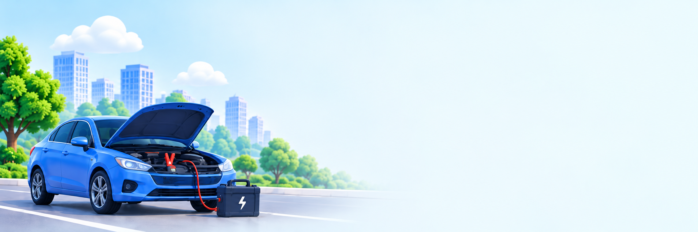

الخطوة ١ من ٣

شو المشكلة
اللي بتواجهك؟
اختَر نوع المساعدة اللي بتحتاجها
تفاصيل المشكلة
وصف بسيط بيساعدنا نساعدك أسرع
حدّد موقعك
تأكد من موقعك عشان نوصلّك أسرع


اختَر نوع المساعدة اللي بتحتاجها
وصف بسيط بيساعدنا نساعدك أسرع
تأكد من موقعك عشان نوصلّك أسرع